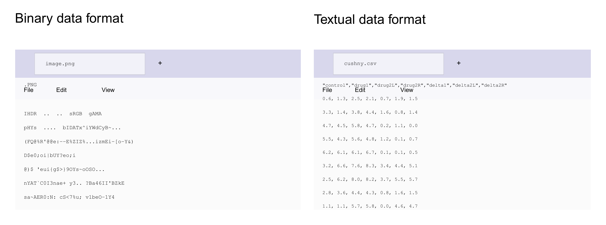
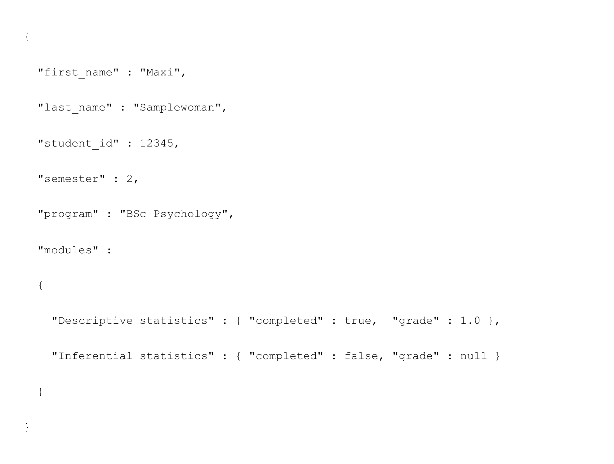
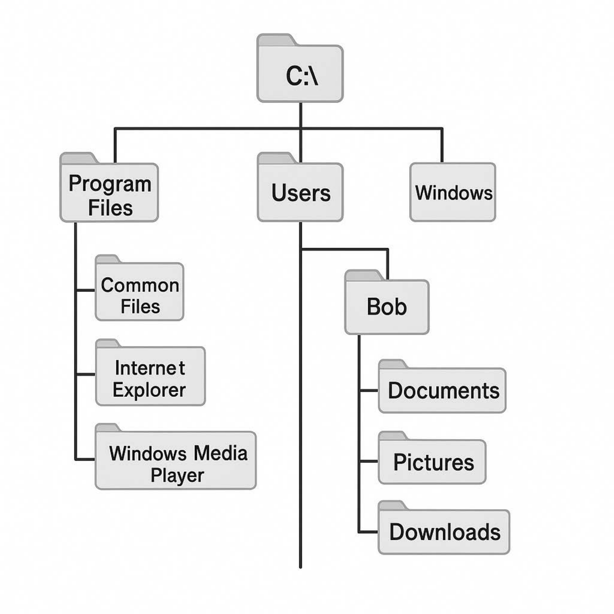

[1] "This is a character vector"[1] "This is a \"string\""In this section, we want to introduce some general terminology for dealing with research data, discuss common formats for the longer-term storage of data, and finally consider the practical reading and saving of data in the context of R directory management.
The FAIR data ideal is a principle for the management of research data that takes into account the broad dissemination, usefulness, and transparency of research data in the digital age. Research data are generally understood as “electronically represented analog or digital data that arise or are used in the course of scientific projects, for example through observations, experiments, simulations, surveys, questionnaires, source research, recordings of audio and video sequences, digitization of objects, and analyses” (Rat für Informationsinfrastrukturen (2017)). Specifically, these include numerical arrays or character arrays, but also computer software such as R scripts, digital tools, workflows, and analysis pipelines.
In addition to these data forms, sometimes also referred to as primary data, so-called metadata are important for the FAIR data ideal. These are data that represent information about other data. One distinguishes, for example, descriptive, structural, and administrative metadata (Riley (2017), Ulrich et al. (2022)).
The FAIR ideal for research data management has its origin in discussions within the FORCE11 conference series and was communicated academically in 2016 by Wilkinson et al. (2016). In essence, it states that research data should be prepared and maintained as Findable, Accessible, Interoperable, and Reusable for humans and machines. Specifically, the FAIR data ideal formulates the following requirements for the management of research (meta)data:
Findability
Accessibility
Interoperability
Reusability
The demand for fair research data management is now quite widespread, although the FAIR principles can be implemented with varying degrees of bureaucratic effort. It remains to be noted, however, that at present the FAIR principles are essentially an ideal of data management to be aspired to, and by no means all research data are available in FAIR form. In fact, dealing with digital research data remains very unstructured, and the German university system in particular only very slowly understands digital data management as a core task. On a larger, although project-based and thus not sustainable, scale, the initiative for a National Research Data Infrastructure (NFDI) is trying to improve German digital research data management. Unfortunately, it must still be noted that many publicly funded researchers neither want to systematically prepare the research data they collect nor make them available to the public. Here, a cultural change toward greater scientific transparency therefore remains to be hoped for, and open, publicly funded research (Open Research, cf., e.g., Toelch & Ostwald (2018), Miedema (2022), Bertram et al. (2023)) remains an ideal to be aspired to.
In general, file formats define the syntax and semantics of data within a file. File formats are bijective mappings of information onto binary long-term storage. In general, one distinguishes data file formats from software file formats, textual from binary file formats, and open from proprietary, that is, copyright-protected, file formats. For binary data file formats, reading data, inspecting them, and manipulating them is generally possible only with special software. Examples of binary file formats are .docx, .pdf, .xlsx, .jpg, and .mp4 files. Binary file formats are often proprietary. In the past, binary file formats were also preferred for research data because of their lower storage requirements. Today, by contrast, textual data file formats such as .txt, .csv, .tsv, and .json are favored. In these formats, reading the stored data, inspecting them, and manipulating them with simple general editors such as VS Code is straightforward, and the file formats are generally not proprietary. Figure 17.1 shows the representation of a binary data format and a textual data format in Windows Notepad. In general, open textual data file formats are therefore appropriate in the research context and in the spirit of the FAIR principles. As examples, we want to consider the .csv, .tsv, and .json file formats as textual file formats in more detail here.

.csv (comma-separated values) and .tsv files (tab-separated values) are important file formats for storing simple, tabularly structured data. In general, .csv and .tsv represent datasets linked row by row. Data fields within a row are separated by commas (.csv) or tab characters (.tsv), and individual datasets are separated from one another by line breaks. The dataset in the first row of a .csv or .tsv file typically contains the definition of the column names and is called the header record. A typical example of a .csv file is shown in Figure 17.1 (right). Here, the rows represent experimental units (here participants), and the columns represent different variables for which a value was determined for the participant.
In the context of data analysis, one distinguishes a wide-format and a long-format data representation for .csv and .tsv files. In wide-format data representation, all variables of an experimental unit are represented in one row, as in the example above; cf. Table 17.1. For some data analyses, however, it is more helpful to distribute the data of an experimental unit across rows. This leads to the so-called long format, as shown in Table 17.2. In general, the wide format is often more helpful for a first intuitive understanding of a dataset, whereas the long format usually represents data more consistently with the model architecture in model-based analyses.
| EU | V1 | V2 | V3 |
|---|---|---|---|
| 1 | 10.1 | 67.5 | 4 |
| 2 | 12.9 | 51.2 | 2 |
| 3 | 20.4 | 70.8 | 5 |
| 4 | 17.5 | 60.3 | 7 |
| Unit | Variable | Measured value |
|---|---|---|
| 1 | V1 | 10.1 |
| 1 | V2 | 67.5 |
| 1 | V3 | 4 |
| 2 | V1 | 12.9 |
| 2 | V2 | 51.2 |
| 2 | V3 | 2 |
| 3 | V1 | 20.4 |
| 3 | V2 | 70.8 |
| 3 | V3 | 5 |
| 4 | V1 | 17.5 |
| 4 | V2 | 60.3 |
| 4 | V3 | 7 |
.json (JavaScript Object Notation) is a textual data format used to store structured data in key-value form. It has similarities to R lists, especially to named list elements, and is therefore well suited as a format for storing metadata.
A .json file consists of objects that are written in curly braces { } and contain a comma-separated list of properties. Each property is a key-value pair, where the key is always written as a string in quotation marks (” “). The value can in turn be an object, an array, a string, a Boolean, or a number. Figure Figure 17.2 shows the content of a .json file for storing student information.

Because computer directory systems are usually represented in words (e.g., C:\Users) rather than numerically, a basis for the automated reading of long-term stored data into memory and, conversely, for saving data from memory in long-term storage is working with so-called strings (character strings). Strings are generated in R with quotation marks or apostrophes:
[1] "This is a character vector"[1] "This is a \"string\""The function paste() converts vectors to character and concatenates them element by element.
[1] "1 2"[1] "This is a string"The function paste() also has a number of other functionalities that can sometimes be helpful:
[1] "Red flower" "Yellow flower"[1] "Red-flower" "Yellow-flower"[1] "Red flower, Yellow flower"The function toString() is a paste() variant for numerical vectors:
[1] "1, 2, 3, 4, 5, 6, 7, 8, 9, 10"[1] "1, 2, ...."To load the data of a file in long-term storage into memory, one needs its address in the computer’s directory structure. Figure 17.3 shows an excerpt from the directory structure of a typical Windows computer.

The addresses of files in the directory structure are called file paths (paths). A path consists of a list of directory names separated by slashes. Under Windows, left-leaning slashes (\, backslash) are traditionally used, whereas under Mac and Linux right-leaning slashes (/, slash) are used. Under Windows, the disk name (e.g., C:\ or D:\) is usually found at the top level of the directory structure, under Mac the user name (/Users/), and under Linux the home directory (/home/). The following examples are Windows-based.
Absolute file paths give the address of a directory or file in the overall directory structure of the hard drive and are not very susceptible to file confusions. Relative file paths, by contrast, refer to a storage location in relation to the current directory, where . and .. denote the current and the superordinate directory. Relative file paths can certainly lead to file confusions. In general, therefore, the use of adaptively generated absolute paths is recommended.
R has a so-called working directory from which files are read by default. When an R terminal is open, getwd() indicates the working directory.
setwd() changes the working directory. Note that R works only with forward slashes /. The manual specification of Windows paths therefore requires double backward slashes \\
With the function file.path(), operating-system-compliant directory and file paths can be generated:
The function dirname() gives the directory that contains a directory or file:
[1] "C:/Users/dirko/Nextcloud/Home/pdwp-online/dirk-ostwald.github.io-en/_part_2"[1] "C:/Users/dirko/Nextcloud/Home/pdwp-online/dirk-ostwald.github.io-en"The function basename() gives the lowest level of a file or directory path:
For reading simply structured .csv files, the R function read.csv() is a good choice. This function reads a file and stores its contents in a dataframe.
Control drug1 drug2L drug2R delta1 delta2L delta2R
1 0.6 1.3 2.5 2.1 0.7 1.9 1.5
2 3.3 1.4 3.8 4.4 1.6 0.8 1.4
3 4.7 4.5 5.8 4.7 0.2 1.1 0.0
4 5.5 4.3 5.6 4.8 1.2 0.1 0.7
5 6.2 6.1 6.1 6.7 0.1 0.1 0.5
6 3.2 6.6 7.6 8.3 3.4 4.4 5.1
7 2.5 6.2 8.0 8.2 3.7 5.5 5.7
8 2.8 3.6 4.4 4.3 0.8 1.6 1.5
9 1.1 1.1 5.7 5.8 0.0 4.6 4.7
10 2.9 4.9 6.3 6.4 2.0 3.4 3.5The following R code defines the absolute path of the file adaptively in the directory structure of the computer with the help of the R working directory.
wdir = getwd() # working directory
print(wdir) # output
ddir = file.path(wdir, "_part_2/_data") # data directory path
print(ddir) # output
fname = "cushny.csv" # (base) filename
print(fname) # output
fpath = file.path(ddir, fname) # filepath
print(fpath) # output
D = read.csv(fpath) # reading the file
print(D) # output of the dataframeIn addition, R offers a variety of possibilities for data import using specialized functions:
For .csv and other text files:
read.csv(), read.csv2(), read.delim(), read.delim2() as read.table() variants.readLines() for low-level text file import.fromJSON() from the rjson package for .json files.For binary files:
read.xlsx() and read.xlsx2() from the xlsx package for Excel .xlsx files.read.spss() from the foreign package for SPSS .sav files.readMat() from the R.matlab package for MATLAB .mat files.For databases:
DBI and RSQLite packages.